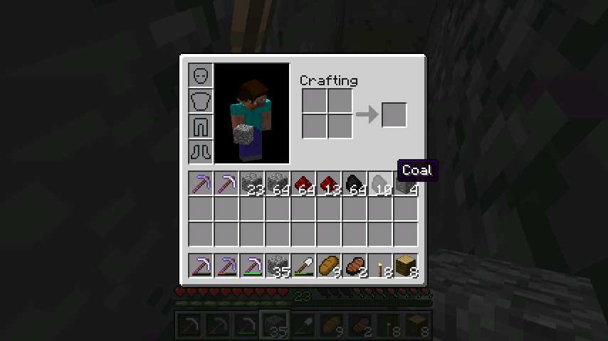

首页
上一页
72
73
74
75
76
77
77
78
79
80
81
82
下一页
末页
defanive2
无尽黑夜
14
接下来就是算一个矿道里面矿物的产量
很简单的算法，把原矿的产量乘以矿物的产率就可以得到矿物的产量了
石头：1x66.1368=66.1368
煤：2.2x0.27336=0.601392
红石：9.9x0.22244=2.202156
铁：1x0.1608=0.1608
金：1x0.03216=0.03216
钻石：2.2x0.0268=0.05896
青金石：13.2x0.01876=0.247632
4730楼
2012-08-24 04:10
defanive2
无尽黑夜
14
第4728L里面的原矿产量算错了，都多乘了0.1，修正后的数据：
石头：Adx97.26%=66.1368
煤矿：(Ad+Ae)x1.02%=2.7336
红石矿：(Ad+Ae)x0.83%=2.2244
铁矿：(Ad+Ae)x0.60%=1.608
金矿：(Ad+Ae)x0.12%=0.3216
钻石矿：(Ad+Ae)x0.10%=0.268
青金石矿：(Ad+Ae)x0.07%=0.1876
4733楼
2012-08-24 04:15
defanive2
无尽黑夜
14
由于原矿产量数据的错误，4730L的矿物产量的数据也错误了
修正后
石头：66.1368
煤：6.01392
红石：22.02156
铁：1.608
金：0.3216
钻石：0.5896
青金石：2.47632
4735楼
2012-08-24 04:17
defanive2
无尽黑夜
14
这张是我在前不久挖矿时候最后截的图
一共挖了18个矿道
代入4735L的结果，我们可以得到理论产量，然后我们跟实际产量进行比较
第一个是理论产量，第二个是实际产量
煤：108 97
红石：396 468
铁：29 61
金：6 10
钻石：11 9
青金石：46 191
可以发现大部分的预测都比较接近（除了青金石，挖的时候我也注意到了这次出得太多了 = =）
由于只挖了18个矿道，数量相对还较少，对于概率游戏来说不足以彻底验证
但是可以看到绝大部分的理论值都很接近
4743楼
2012-08-24 04:30
defanive2
无尽黑夜
14
好了接下来就可以算最终的各种稿子的产量了
把1h内稿子可以挖的矿道数乘以矿道的理论产量，就可以得出1h稿子的产量
产量是按 石头 煤 红石 铁金 钻石 青金石 排列
石稿：11586 1054 3858 282 56 103 434
铁镐：14779 1344 4921 359 72 132 553
钻石：17092 1554 5691 416 83 152 640
4744楼
2012-08-24 04:38
defanive2
无尽黑夜
14
接下来就要算支出
支出有：稿子的原料，和火把
有人会说，反正都是挖矿道，无论用什么挖矿道都是要插火把的
对的，火把是固定成本，因此不纳入这个计算当中
这里只计算稿子的原料成本
每个稿子都是由2个木棍和3个材料做成的，而1个木棍等于1/8个原木
这里需要稿子的耐久了，查表可知3种稿子的耐久为
石稿：132
铁镐：251
钻石稿：1562
4745楼
2012-08-24 04:44
defanive2
无尽黑夜
14
接下来计算挖1h的矿需要花费多少稿子
算法很简单，就是把要挖的个数除以稿子的耐久即可
要挖的个数是多少呢？也就是石头的产出个数
因此把石头的产量除以稿子的耐久，就可以得到需要耗费多少个稿子了
石稿：11586/132=88.77
铁镐：14779/251=58.88
钻石稿：17092/1562=10.94
4746楼
2012-08-24 04:47
defanive2
无尽黑夜
14
然后把耗费的稿子转换成原材料
1个稿子需要耗费2个木棍，也就是1/4个原木，和3个材料
第一个数据是耗费的原木，第二个数据是耗费的材料，也就分别是石头、铁和钻石
石稿：22.2 266.3
铁镐：14.7 176.6
钻石稿：2.7 32.8
4747楼
2012-08-24 04:50
defanive2
无尽黑夜
14
4745L的耐久度数据有误
由于有耐久3附魔，一个稿子每次使用有25%的几率不掉耐久
也就是平均来说，一个稿子为普通稿子的4倍耐久度
修正后的数据为：
石稿：132x4=528
铁镐：251x4=1004
钻石稿：1562x4=6248
4748楼
2012-08-24 04:55
defanive2
无尽黑夜
14
需要耗费的稿子数量也需要重新计算
石稿：11586/528=21.9
铁镐：14779/1004=14.7
钻石稿：17092/6248=2.7
4749楼
2012-08-24 04:57
defanive2
无尽黑夜
14
需要耗费的原材料数量也需要重新计算
第一个数据是原木，第二个数据是材料
石稿：5.5 65.7
铁镐：3.7 44.1
钻石稿：0.7 8.1
4750楼
2012-08-24 04:59
defanive2
无尽黑夜
14
最后从我们1h的挖矿产量里面减去我们的支出，就可以得到净产量
净产量是按 石头 煤 红石 铁 金 钻石 青金石 原木 排列
石稿：11520 1054 3858 282 56 103 434 -5.5
铁镐：14779 1344 4921 315 72 132 553 -3.7
钻石：17092 1554 5691 416 83 144 640 -0.7
4751楼
2012-08-24 05:02
defanive2
无尽黑夜
14
从这个结果可见，使用效率4+耐久3附魔的钻石稿，可以获得更多的矿物产量
4752楼
2012-08-24 05:03
defanive2
无尽黑夜
14
接下来我想说一个附属的事情，使用没有耐久3的稿子，也就是只有效率4的稿子进行挖矿造成的影响
如果没有耐久3，那么就是使用的4745L的耐久数据，和4747L的支出数据
然后从产量中减去支出得到净产量
净产量是按 石头 煤 红石 铁 金 钻石 青金石 原木 排列
石稿：11320 1054 3858 282 56 103 434 -22.2
铁镐：14779 1344 4921 182 72 132 553 -14.7
钻石：17092 1554 5691 416 83 119 640 -2.7
4753楼
2012-08-24 05:08
defanive2
无尽黑夜
14
仔细分析4783表格我们可以得出以下的结论
1、使用铁镐，对于使用石稿，反而导致1h内铁的产量下降，但是其余矿物的产量上升
2、使用钻石稿，对于使用石稿，产量全部都增加
3、使用钻石稿，对于使用铁镐，反而导致钻石的产量下降，但是其余矿物产量上升
这是一个十分微妙的结果，可见耐久3附魔对于稿子的选择使用是有非常大的影响的
当然这个结果是建立在有FortuneIII的结果上的
4754楼
2012-08-24 05:12
defanive2
无尽黑夜
14
如果对于一个挖矿新人呢？也就是完全没有附魔能力的矿工？
那么这个表格的变化会如何呢？
在这里我们不需要管效率4附魔，因为效率4附魔只是增加了挖矿速度，同时也增加了稿子的消耗速度
全部参数的增加都是线性的，而所有接下来的运算都是线性的，因此这个参数没有关系
从另外一个层面理解，就是效率4只是让时间变快了，并不会改变稿子支出和产量的相对关系
于是在这里，我们移走FortuneIII和耐久3这两个附魔，重新进行计算
4755楼
2012-08-24 05:15
defanive2
无尽黑夜
14
矿物的产率在没有了FortuneIII之后
石头：1
煤：1
红石：4.5
铁：1
金：1
钻石：1
青金石：6
4756楼
2012-08-24 05:15
defanive2
无尽黑夜
14
然后单个矿道内的矿物产量也由于没有了FortuneIII而改变
石头：1x66.1368=66.1368
煤：1x2.7336=2.7336
红石：4.5x2.2244=10.0098
铁：1x1.608=1.608
金：1x0.3216=0.3216
钻石：1x0.268=0.268
青金石：6x0.1876=1.1256
4757楼
2012-08-24 05:18
defanive2
无尽黑夜
14
然后再乘到了1h内稿子可以挖的矿道数量上，就可以得到没有FortuneIII的产量了
产量是按 石头 煤 红石 铁金 钻石 青金石 排列
石稿：11586 479 1754 282 56 47 197
铁镐：14779 611 2237 359 72 60 252
钻石：17092 706 2587 416 83 69 291
4758楼
2012-08-24 05:21
defanive2
无尽黑夜
14
接下来再减去4747L的支出，也就是没有耐久3附魔的稿子支出，就可以得到净产量
这个净产量，也就是没有耐久3和FortuneIII附魔的净产量
净产量是按 石头 煤 红石 铁 金 钻石 青金石 原木 排列
石稿：11320 479 1754 282 56 47 197 -22.2
铁镐：14779 611 2237 182 72 60 252 -14.7
钻石：17092 706 2587 416 83 36 291 -2.7
4759楼
2012-08-24 05:24
defanive2
无尽黑夜
14
4759L的表格可以代表不使用附魔稿子的矿工的净产量
仔细分析这个表格，可以得到以下结论
1、使用铁镐，对于使用石稿，反而导致铁的产量下降，但是其余矿物产量上升
2、使用钻石稿，对于使用石稿，反而导致钻石的产量下降，但是其余矿物产量上升
3、使用钻石稿，对于使用铁镐，反而导致钻石的产量下降，但是其余矿物产量上升
4760楼
2012-08-24 05:26
defanive2
无尽黑夜
14
好了，现在来总结一下这次计算的结果
1、效率附魔不会影响支出和产量的相对关系，因此无论如何一个效率附魔总是会提高单位时间内的产量
2、对于有FortuneIII稿和耐久3稿，最佳就是使用钻石稿，任何一种矿物的产量都会增加
3、对于有FortuneIII但是没有耐久3稿
1）铁镐vs石稿，会降低铁55%的产量，但可以增加其他矿物的产量（钻石产量增加28%）
2）钻石稿vs铁镐，会降低钻石11%的产量，但是可以增加其他矿物的产量（铁产量增加129%）
3）钻石稿vs石稿，产量全部增加
4、对于既没有FortuneIII也没有耐久3稿
1）铁镐vs石稿，会降低铁55%的产量，但可以增加其他矿物的产量（钻石产量增加22%）
2）钻石vs铁镐，会降低钻石40%的产量，但是可以增加其他矿和的产量（铁产量增加129%）
3）钻石vs铁镐，会降低钻石31%的产量，但是可以增加其他矿和的产量
总而言之，对于开人工矿道进行挖矿的新人，而且没有任何附魔，不要觉得自己铁很多，用铁镐进行挖矿
当把4759L的铁净产量除以附魔的3倍速度，就只剩61个铁了，再减去挖矿时东看西看的时间和走路的时间，基本上就得不到多少个铁了
再加上平常生活的使用，例如造防具、工具等等，很有可能导致铁一直处于长期匮乏的状态
但是这样用铁挖可以增加钻石的产量，但是不得不说增加的百分比实在太少，而且发现产量也低，要用铁的大量消耗来换取钻石实在是不值得
所以对于挖矿新人的建议就是，老老实实用石稿挖矿
如果觉得石稿挖矿慢，花1个等级附魔石稿，就可以得到效率1，150%的挖矿速度，正好是铁镐的挖矿速度，但是省了你很多的铁资源
对于附魔基础不牢固的同学，使用钻石稿挖矿可以提高铁和其他矿物的产量，但是钻石的产量就被大大限制（FortuneIII可以帮助恢复一点产量）
总之如果不是特别需求铁，用钻石这种奢侈品去弥补铁的需求空缺，个人认为是不值得的
而对于附魔基础充分，例如我有END刷怪塔附魔基本不是问题，那么就应该使用钻石稿进行挖矿，对于任何矿物的产量都是正效益的
4761楼
2012-08-24 05:48
defanive2
无尽黑夜
14
好了终于完成这个蛋疼的计算了。。
一边码字码心得和计算真是浪费了不少时间，居然就快天亮了。。
赶快去睡觉。。明天睡醒就不知道什么时候了。。
4762楼
2012-08-24 05:49
defanive2
无尽黑夜
14
大家好像对昨晚的计算结果不怎么感冒。。
我是觉得非常有意义，挖矿如何提高效率难道意义还不大么
今天太寂寞了，先把青金石给做成块，节省一点储存空间
——来自 MCLive
4883楼
2012-08-24 16:34
defanive2
无尽黑夜
14
LZ我来继续挖矿了
好久不挖矿，要增加矿物储备勤奋一点是必须的
——来自 MCLive
4884楼
2012-08-24 16:37
defanive2
无尽黑夜
14
火柴储备，应该带8个原木而不是几组的火柴
更能省空间
——来自 MCLive
4885楼
2012-08-24 16:39
defanive2
无尽黑夜
14
找到煤之后就可以在背包的2x2合成台里面合成火把了
——来自 MCLive
4887楼
2012-08-24 16:42
defanive2
无尽黑夜
14
FortuneIII轻易入手一堆煤
——来自 MCLive

4888楼
2012-08-24 16:43
defanive2
无尽黑夜
14
发现钻石。。
不过FortuneIII的稿子好像就要坏了
——来自 MCLive
4892楼
2012-08-24 16:49
defanive2
无尽黑夜
14
一共8个钻石，结果不小心手贱挖了一个。。
fortuneIII的稿子爆掉了，我去附魔一些
——来自 MCLive
4893楼
2012-08-24 16:51
首页
上一页
72
73
74
75
76
77
77
78
79
80
81
82
下一页
末页